Izar 2020 PDX (Cohort 3) DE Analysis
Jesslyn Goh and Mike Cuoco
7/20/2020
Last updated: 2020-07-28
Checks: 7 0
Knit directory: jesslyn_ovca/analysis/
This reproducible R Markdown analysis was created with workflowr (version 1.6.2). The Checks tab describes the reproducibility checks that were applied when the results were created. The Past versions tab lists the development history.
Great! Since the R Markdown file has been committed to the Git repository, you know the exact version of the code that produced these results.
Great job! The global environment was empty. Objects defined in the global environment can affect the analysis in your R Markdown file in unknown ways. For reproduciblity it’s best to always run the code in an empty environment.
The command set.seed(20200713) was run prior to running the code in the R Markdown file. Setting a seed ensures that any results that rely on randomness, e.g. subsampling or permutations, are reproducible.
Great job! Recording the operating system, R version, and package versions is critical for reproducibility.
Nice! There were no cached chunks for this analysis, so you can be confident that you successfully produced the results during this run.
Great job! Using relative paths to the files within your workflowr project makes it easier to run your code on other machines.
Great! You are using Git for version control. Tracking code development and connecting the code version to the results is critical for reproducibility.
The results in this page were generated with repository version 3f6dc78. See the Past versions tab to see a history of the changes made to the R Markdown and HTML files.
Note that you need to be careful to ensure that all relevant files for the analysis have been committed to Git prior to generating the results (you can use wflow_publish or wflow_git_commit). workflowr only checks the R Markdown file, but you know if there are other scripts or data files that it depends on. Below is the status of the Git repository when the results were generated:
Ignored files:
Ignored: .DS_Store
Ignored: .Rhistory
Ignored: .Rproj.user/
Ignored: analysis/.DS_Store
Ignored: code/.DS_Store
Ignored: data/.DS_Store
Ignored: data/HTAPP/
Ignored: data/Izar_2020/
Ignored: data/gene_lists/.DS_Store
Ignored: data/gene_lists/extra/.DS_Store
Ignored: jesslyn_plots/
Ignored: mike_plots/
Ignored: old/.DS_Store
Ignored: renv/.DS_Store
Ignored: renv/library/
Ignored: renv/python/
Ignored: renv/staging/
Ignored: vignettes/
Note that any generated files, e.g. HTML, png, CSS, etc., are not included in this status report because it is ok for generated content to have uncommitted changes.
These are the previous versions of the repository in which changes were made to the R Markdown (analysis/03.1_Izar2020_PDX_DEAnalysis.Rmd) and HTML (docs/03.1_Izar2020_PDX_DEAnalysis.html) files. If you’ve configured a remote Git repository (see ?wflow_git_remote), click on the hyperlinks in the table below to view the files as they were in that past version.
| File | Version | Author | Date | Message |
|---|---|---|---|---|
| Rmd | cdd10f9 | jgoh2 | 2020-07-28 | SS2 DE Analysis |
| html | cdd10f9 | jgoh2 | 2020-07-28 | SS2 DE Analysis |
| html | 35c7947 | jgoh2 | 2020-07-27 | SS2 Analysis Part 1 and 2 |
| Rmd | 8ca1e01 | jgoh2 | 2020-07-27 | PDX analysis edits |
| html | 8ca1e01 | jgoh2 | 2020-07-27 | PDX analysis edits |
| html | f1acd7b | jgoh2 | 2020-07-24 | Move PDX_choices.Rmd to old |
| Rmd | bc21d3a | jgoh2 | 2020-07-23 | PDX DE Analysis |
| html | bc21d3a | jgoh2 | 2020-07-23 | PDX DE Analysis |
| Rmd | e27cfd1 | jgoh2 | 2020-07-22 | Moved files out of the analysis folder + AddModulescore in read_Izar_2020.R |
| Rmd | 979ae91 | jgoh2 | 2020-07-20 | Reorganize PDX code and add to the analysis folder |
IZAR 2020 PDX (COHORT 3) DATA DIFFERANTIAL EXPRESISON ANALYSIS
OVERVIEW
- The PDX data from Izar2020 consists of only Malignant cells from three HGSOC PDX models derived from patients with different treatment histories were selected for implantation:
- DF20 (BRCA WT treatment-naive, clinically platinum sensitive)
- DF101 (BRCA1 mutant, 2 lines of prior therapy, clinically platinum resistant)
- DF68 (BRCA1 mutant, 6 lines of prior therapy, clinically platinum resistant)
- After tumors were established, animals were divided into two groups per model:
- Vehicle (treated with DMSO)
- Carboplatin (treated with IP carboplatin)
- Carboplatin-treated mice for minimal residual disease (MRD) group were harvested for scRNA-seq
- The remaining carboplatin-treated mice were harvested at endpoint (vehicle)
- In our 3-part analysis of the Izar 2020 PDX data, we are interested in identifying differentially expressed genes and hallmark genesets between treatment statuses within each model.
- We split our PDX analysis into three parts:
- Load Data and Create PDX Seurat Object
- The code to this part of our analysis is in the read_Izar_2020.R file in the code folder. During this part of our analysis we:
- Load in PDX count matrix and Create Seurat Object
- Assign Metadata identities including:
- Mouse ID
- Model ID
- Treatment Status
- Score cells for cell cycle and hallmark genesets - Note: It does not matter whether we call AddModuleScore before or after subsetting and scaling each model because AddModuleScore uses the data slot.
- Save Seurat Object
- The code to this part of our analysis is in the read_Izar_2020.R file in the code folder. During this part of our analysis we:
- Process Data and Exploratory Data Analysis
- The code to this part of our analysis can be found in the 03_Izar2020_PDX_Load file in the old/edited folder. During this part of our analysis we:
- Load in PDX Seurat Object from Part 1 and subset by model. Continue analysis separately for each model.
- Scale and FindVariableFeatures (prepares data for dimensionality reduction)
- Dimensionality Reduction (PCA + UMAP)
- Visualize how cells separate based on metadata identities via UMAP
- Intermodel heterogeneity: How do cells separate by model?
- Intramodel heterogeneity:
- How do cells separate by treament status?
- How do cells separate by cell cycle phase?
- Compute summary metrics for PDX data such as:
- Number of cells per model per treatment
- Number of cells per treatment per cell cycle phase
- Save Seurat Objects
- The code to this part of our analysis can be found in the 03_Izar2020_PDX_Load file in the old/edited folder. During this part of our analysis we:
- DE Analysis
- TYPE #1 DE ANALYSIS: Visualizing and Quantifying Differentially Expression on Predefined GO Genesets
- Violin Plots and UMAP
- Gene Set Enrichment Analysis (GSEA)
- TYPE #2 DE ANALYSIS: Finding DE Genes from scratch
- Volcano Plots
- CELL CYCLE ANALYSIS
- Evaluate the idea that cell cycle might influence expression of signatures
- TYPE #1 DE ANALYSIS: Visualizing and Quantifying Differentially Expression on Predefined GO Genesets
- Load Data and Create PDX Seurat Object
This is the third part of our 3-part analysis of the Izar 2020 PDX (Cohort 3) data.
DIFFERENTIAL EXPRESSION ANALYSIS IN-DEPTH EXPLANATION
We are interested in answering a few questions for our DE Analysis:
DE ANALYSIS #1. Visualizing and Quantifying DE Hallmark Genesets
- QUESTION Are modules (OXPHOS and UPR) differentially expressed across treatment conditions within each model?
- APPROACH #1 Violin Plots and UMAP
- Visualize differences in hallmark score across treatment conditions with:
- Violin Plot
- UMAP by treatment vs. UMAP by hallmark score
- Statistical test: is the difference in hallmark score across treatment conditions statistically significant?
- Visualize differences in hallmark score across treatment conditions with:
- APPROACH #2 GSEA
- GSEA enrichment plots for hallmarks of interest between condition.1 vs. condition.2
- Rank genes and compute GSEA enrichment scores
- Statistical test: how significant are the enrichment scores?
- APPROACH #1 Violin Plots and UMAP
DE ANALYSIS #2. Identifying Individual DE Genes
CELL CYCLE ANALYSIS
- QUESTION #1 Are more cells at different cell cycle phases between treatments?
- APPROACH Violin Plots and UMAP
- Visualize differences in cell cycle score across treatment conditions with:
- Stacked Bar Plot
- Violin Plot
- UMAP by treatment vs. UMAP by cell cycle phase vs. UMAP by S and G2M Score
- Statistical test: is the difference in cell cycle scores across treatment conditions statistically
- Visualize differences in cell cycle score across treatment conditions with:
- APPROACH Violin Plots and UMAP
- QUESTION #2 Is there a correlation between cell cycle phase and the expression of signatures?
- APPROACH Violin Plots
- Create Violin Plots for each hallmark of interest like **DE Analysis #1/APPROACH #1.
- Stratify the Violin Plots by cell cycle phase
- APPROACH Violin Plots
STEP 1 LOAD IN SEURAT OBJECTS AND GENESETS
# Load packages
source(here::here('packages.R'))
#Read in PDX RDS object
PDX_All = readRDS("data/Izar_2020/test/jesslyn_PDX_All_processed.RDS")
PDX_DF20 = readRDS("data/Izar_2020/test/jesslyn_PDX_DF20_processed.RDS")
PDX_DF101 = readRDS("data/Izar_2020/test/jesslyn_PDX_DF101_processed.RDS")
PDX_DF68 = readRDS("data/Izar_2020/test/jesslyn_PDX_DF68_processed.RDS")
#Read in hallmarks of interest
hallmark_names = read_lines("data/gene_lists/hallmarks.txt")
hallmark.list <- vector(mode = "list", length = length(hallmark_names) + 2)
names(hallmark.list) <- c(hallmark_names, "GO.OXPHOS", "KEGG.OXPHOS")
for(hm in hallmark_names){
file <- read_lines(glue("data/gene_lists/hallmarks/{hm}_updated.txt"), skip = 1)
hallmark.list[[hm]] <- file
}
hallmark.list[["GO.OXPHOS"]] <- read_lines("data/gene_lists/extra/GO.OXPHOS.txt", skip = 1)
hallmark.list[["KEGG.OXPHOS"]] <- read_lines("data/gene_lists/extra/KEGG.OXPHOS.txt", skip = 2)
#center module and cell cycle scores and reassign to the metadata of each Seurat object
hm.names <- names(PDX_All@meta.data)[9:46]
for(i in hm.names){
DF20.hm.centered <- scale(PDX_DF20[[i]], center = TRUE, scale = FALSE)
PDX_DF20 <- AddMetaData(PDX_DF20, DF20.hm.centered, col.name = glue("{i}.centered"))
DF101.hm.centered <- scale(PDX_DF101[[i]], center = TRUE, scale = FALSE)
PDX_DF101 <- AddMetaData(PDX_DF101, DF101.hm.centered, col.name = glue("{i}.centered"))
DF68.hm.centered <- scale(PDX_DF68[[i]], center = TRUE, scale = FALSE)
PDX_DF68 <- AddMetaData(PDX_DF68, DF68.hm.centered, col.name = glue("{i}.centered"))
}STEP 2 DE ANALYSIS #1. VISUALIZING AND QUANTIFYING DE HALLMARK GENESETS
- QUESTION Are modules (OXPHOS and UPR) differentially expressed across treatment conditions within each model?
- HYPOTHESIS We hypothesize that the MRD treatment condition will express enriched levels of OXPHOS and UPR hallmarks relative to cells in the vehicle and relapse treatment conditions (MRD > vehicle, MRD > relapse).
- APPROACH #1 Violin Plots and UMAP
- Center OXPHOS and UPR module scores at 0 and reassign to metadata
- Visualize differences in hallmark score across treatment conditions with:
- UMAP by treatment vs. UMAP by hallmark score
- Violin Plot (center module scores at 0)
- Statistical test (wilcoxon rank sum test): is the difference in hallmark score across treatment conditions statistically significant?
- APPROACH #1 Violin Plots and UMAP
hms.centered <- c("HALLMARK_OXIDATIVE_PHOSPHORYLATION25.centered", "HALLMARK_UNFOLDED_PROTEIN_RESPONSE33.centered")
#UMAP
PDX.names <- c("DF20", "DF101", "DF68")
PDXs <- c(PDX_DF20, PDX_DF101, PDX_DF68)
UMAP.plots <- vector("list", length(PDXs))
names(UMAP.plots) <- PDX.names
for (i in 1:length(PDXs)){
obj <- PDX.names[[i]]
numCells = nrow(PDXs[[i]]@meta.data)
umap <- UMAPPlot(PDXs[[i]], group.by = "treatment.status") +
labs(title = glue("{obj} UMAP by Treatment"), subtitle = glue("Number of cells in {obj}: {numCells}"))+
theme(plot.subtitle = element_text(size = 8))
p <- FeaturePlot(PDXs[[i]], features = hms.centered, combine = FALSE)
p[[1]] <- p[[1]] + labs(title = glue("{obj} UMAP by Oxphos Scores"))
p[[2]] <- p[[2]] + labs(title = glue("{obj} UMAP by UPR Scores"))
UMAP.plots[[obj]] <- umap + p[[1]] + p[[2]]
}
UMAP.plots[["DF20"]]
UMAP.plots[["DF101"]]
UMAP.plots[["DF68"]]
- OBSERVATIONS
- Since cells do not separate by treatment status, it is difficult to determine whether there is a correlation between treatment condition and hallmark scores based on our UMAP visualization.
- We therefore try to visualize DE hallmark scores across treatment conditions with VlnPlots
#VlnPlot
PDX.names <- c("DF20", "DF101", "DF68")
PDXs <- c(PDX_DF20, PDX_DF101, PDX_DF68)
Vln.plots <- vector("list", length(PDXs))
names(Vln.plots) <- PDX.names
for (i in 1:length(PDXs)){
obj <- PDX.names[[i]]
numCells <- nrow(PDXs[[i]]@meta.data)
p <- VlnPlot(PDXs[[i]], features = hms.centered, group.by = "treatment.status", pt.size = 0, combine = F)
p[[1]] <- p[[1]] + labs(title = glue("OXPHOS scores across treatment in {obj}"), x = obj, subtitle = glue("Number of cells in {obj}: {numCells}"), caption = "www.gsea-msigdb.org: HALLMARK_OXIDATIVE_PHOSPHORYLATION") +
theme(plot.caption = element_text(size = 10)) +
geom_boxplot(width = 0.15, position = position_dodge(0.9), alpha = 0.3, show.legend = F) +
geom_text(label = paste(sum(PDXs[[i]]$treatment.status == "vehicle"), "cells"), x = "vehicle", y = min(PDXs[[i]]$HALLMARK_OXIDATIVE_PHOSPHORYLATION25.centered) -0.03) +
geom_text(label = paste(sum(PDXs[[i]]$treatment.status == "MRD"), "cells"), x = "MRD", y = min(PDXs[[i]]$HALLMARK_OXIDATIVE_PHOSPHORYLATION25.centered) - 0.03) +
geom_text(label = paste(sum(PDXs[[i]]$treatment.status == "relapse"), "cells"), x = "relapse", y = min(PDXs[[i]]$HALLMARK_OXIDATIVE_PHOSPHORYLATION25.centered) - 0.03)
p[[2]] <- p[[2]] + labs(title = glue("UPR scores across treatment in {obj}"), x = obj, caption = "www.gsea-msigdb.org: HALLMARK_UNFOLDED_PROTEIN_RESPONSE") +
theme(plot.caption = element_text(size = 10)) +
geom_boxplot(width = 0.15, position = position_dodge(0.9), alpha = 0.3, show.legend = F)
p <- p[[1]] + p[[2]] + plot_layout(guides= 'collect')
Vln.plots[[obj]] <- p
}
Vln.plots[["DF20"]]
Vln.plots[["DF101"]]
Vln.plots[["DF68"]]
- OBSERVATIONS
- We observe differences in hallmark scores across treatment conditions:
- DF20
- OXPHOS: MRD > Vehicle ; MRD > Relapse (supports our hypothesis)
- UPR: MRD > Vehicle ; MRD > Relapse (supports our hypothesis)
- DF101
- OXPHOS: Vehicle >> MRD; Vehicle >> Relapse ; MRD > Relapse (does not support our hypothesis)
- UPR: Relapse > MRD > Vehicle (does not support our hypothesis)
- DF68
- OXPHOS: MRD > Vehicle; MRD > Relapse (supports our hypothesis)
- UPR: Relapse > Vehicle > MRD (does not support our hypothesis)
- DF20
- Most of the comparisons do not support our hypothesis. We conduct statistical tests to determine whether the differences in OXPHOS and UPR hallmark scores across treatment conditions are statistically significant. We will be using the wilcoxon rank sum test
- We observe differences in hallmark scores across treatment conditions:
#DF20 ---------------------------------
DF20.vehicle <- subset(PDX_DF20, subset = (treatment.status == "vehicle"))
DF20.MRD <- subset(PDX_DF20, subset = (treatment.status == "MRD"))
DF20.relapse <- subset(PDX_DF20, subset = (treatment.status == "relapse"))
DF20.oxphos.df <- data.frame(
"MRDvsVehicle" = wilcox.test(DF20.MRD$HALLMARK_OXIDATIVE_PHOSPHORYLATION25.centered, DF20.vehicle$HALLMARK_OXIDATIVE_PHOSPHORYLATION25.centered)$p.value,
"MRDvsRelapse" = wilcox.test(DF20.MRD$HALLMARK_OXIDATIVE_PHOSPHORYLATION25.centered, DF20.relapse$HALLMARK_OXIDATIVE_PHOSPHORYLATION25.centered)$p.value,
"VehiclevsRelapse" = wilcox.test(DF20.vehicle$HALLMARK_OXIDATIVE_PHOSPHORYLATION25.centered, DF20.relapse$HALLMARK_OXIDATIVE_PHOSPHORYLATION25.centered)$p.value
)
DF20.UPR.df <-
data.frame(
"MRDvsVehicle" = wilcox.test(DF20.MRD$HALLMARK_UNFOLDED_PROTEIN_RESPONSE33.centered, DF20.vehicle$HALLMARK_UNFOLDED_PROTEIN_RESPONSE33.centered)$p.value,
"MRDvsRelapse" = wilcox.test(DF20.MRD$HALLMARK_UNFOLDED_PROTEIN_RESPONSE33.centered, DF20.relapse$HALLMARK_UNFOLDED_PROTEIN_RESPONSE33.centered)$p.value,
"VehiclevsRelapse" = wilcox.test(DF20.vehicle$HALLMARK_UNFOLDED_PROTEIN_RESPONSE33.centered, DF20.relapse$HALLMARK_UNFOLDED_PROTEIN_RESPONSE33.centered)$p.value
)
#DF101 ---------------------------------
DF101.vehicle <- subset(PDX_DF101, subset = (treatment.status == "vehicle"))
DF101.MRD <- subset(PDX_DF101, subset = (treatment.status == "MRD"))
DF101.relapse <- subset(PDX_DF101, subset = (treatment.status == "relapse"))
DF101.oxphos.df <- data.frame(
"MRDvsVehicle" = wilcox.test(DF101.MRD$HALLMARK_OXIDATIVE_PHOSPHORYLATION25.centered, DF101.vehicle$HALLMARK_OXIDATIVE_PHOSPHORYLATION25.centered)$p.value,
"MRDvsRelapse" = wilcox.test(DF101.MRD$HALLMARK_OXIDATIVE_PHOSPHORYLATION25.centered, DF101.relapse$HALLMARK_OXIDATIVE_PHOSPHORYLATION25.centered)$p.value,
"VehiclevsRelapse" = wilcox.test(DF101.vehicle$HALLMARK_OXIDATIVE_PHOSPHORYLATION25.centered, DF101.relapse$HALLMARK_OXIDATIVE_PHOSPHORYLATION25.centered)$p.value
)
DF101.UPR.df <-
data.frame(
"MRDvsVehicle" = wilcox.test(DF101.MRD$HALLMARK_UNFOLDED_PROTEIN_RESPONSE33.centered, DF101.vehicle$HALLMARK_UNFOLDED_PROTEIN_RESPONSE33.centered)$p.value,
"MRDvsRelapse" = wilcox.test(DF101.MRD$HALLMARK_UNFOLDED_PROTEIN_RESPONSE33.centered, DF101.relapse$HALLMARK_UNFOLDED_PROTEIN_RESPONSE33.centered)$p.value,
"VehiclevsRelapse" = wilcox.test(DF101.vehicle$HALLMARK_UNFOLDED_PROTEIN_RESPONSE33.centered, DF101.relapse$HALLMARK_UNFOLDED_PROTEIN_RESPONSE33.centered)$p.value
)
#DF68 ---------------------------------
DF68.vehicle <- subset(PDX_DF68, subset = (treatment.status == "vehicle"))
DF68.MRD <- subset(PDX_DF68, subset = (treatment.status == "MRD"))
DF68.relapse <- subset(PDX_DF68, subset = (treatment.status == "relapse"))
DF68.oxphos.df <- data.frame(
"MRDvsVehicle" = wilcox.test(DF68.MRD$HALLMARK_OXIDATIVE_PHOSPHORYLATION25.centered, DF68.vehicle$HALLMARK_OXIDATIVE_PHOSPHORYLATION25.centered)$p.value,
"MRDvsRelapse" = wilcox.test(DF68.MRD$HALLMARK_OXIDATIVE_PHOSPHORYLATION25.centered, DF68.relapse$HALLMARK_OXIDATIVE_PHOSPHORYLATION25.centered)$p.value,
"VehiclevsRelapse" = wilcox.test(DF68.vehicle$HALLMARK_OXIDATIVE_PHOSPHORYLATION25.centered, DF68.relapse$HALLMARK_OXIDATIVE_PHOSPHORYLATION25.centered)$p.value
)
DF68.UPR.df <-
data.frame(
"MRDvsVehicle" = wilcox.test(DF68.MRD$HALLMARK_UNFOLDED_PROTEIN_RESPONSE33.centered, DF68.vehicle$HALLMARK_UNFOLDED_PROTEIN_RESPONSE33.centered)$p.value,
"MRDvsRelapse" = wilcox.test(DF68.MRD$HALLMARK_UNFOLDED_PROTEIN_RESPONSE33.centered, DF68.relapse$HALLMARK_UNFOLDED_PROTEIN_RESPONSE33.centered)$p.value,
"VehiclevsRelapse" = wilcox.test(DF68.vehicle$HALLMARK_UNFOLDED_PROTEIN_RESPONSE33.centered, DF68.relapse$HALLMARK_UNFOLDED_PROTEIN_RESPONSE33.centered)$p.value
)
#combine ------------------------------
oxphos.DF <- rbind(DF20.oxphos.df, DF101.oxphos.df, DF68.oxphos.df)
rownames(oxphos.DF) <- c("OXPHOS.DF20", "OXPHOS.DF101", "OXPHOS.DF68")
UPR.DF <- rbind(DF20.UPR.df, DF101.UPR.df, DF68.UPR.df)
rownames(UPR.DF) <- c("UPR.DF20", "UPR.DF101", "UPR.DF68")
all.DF <- rbind(oxphos.DF, UPR.DF)
DT::datatable(all.DF) %>%
DT::formatRound(names(all.DF), digits = 7) %>%
DT::formatStyle(names(all.DF), color = DT::styleInterval(0.05, c('red', 'black')))- CONCLUSIONS
- The only statistically significant difference (p < 0.05) in hallmark scores is between treatment conditions within model DF101 for OXPHOS
- DF101 OXPHOS: Vehicle > MRD > Relapse
- However, the trends found in DF101 do not agree with our hypothesis that cells in MRD differentially enrich OXPHOS genes)
Considering how we did not obtain statistically significant results from these genesets, we looked for other OXPHOS genesets to confirm our results. The OXPHOS genesets that we test are listed as follows:
- HALLMARK_OXIDATIVE_PHOSPHORYLATION (200 genes) https://www.gsea-msigdb.org/gsea/msigdb/cards/HALLMARK_OXIDATIVE_PHOSPHORYLATION (used above)
- GO_OXIDATIVE_PHOSPHORYLATION (144 genes) https://www.gsea-msigdb.org/gsea/msigdb/cards/GO_OXIDATIVE_PHOSPHORYLATION
- KEGG_OXIDATIVE_PHOSPHORYLATION (131 genes) https://www.gsea-msigdb.org/gsea/msigdb/cards/KEGG_OXIDATIVE_PHOSPHORYLATION
oxphos.centered <- c("HALLMARK_OXIDATIVE_PHOSPHORYLATION25.centered", "GO.OXPHOS35.centered", "KEGG.OXPHOS36.centered")
PDX.names <- c("DF20", "DF101", "DF68")
PDXs <- c(PDX_DF20, PDX_DF101, PDX_DF68)
Oxphos.Vln.plots <- vector("list", length(PDXs))
names(Oxphos.Vln.plots) <- PDX.names
for (i in 1:length(PDXs)){
obj <- PDXs[[i]]
name <- PDX.names[[i]]
numCells <- nrow(PDXs[[i]]@meta.data)
p <- VlnPlot(obj, features = oxphos.centered, group.by = "treatment.status", pt.size = 0, combine = F)
p[[1]] <- p[[1]] + labs(title = glue("{name} HALLMARK_OXPHOS scores across treatment"), x = name, subtitle = glue("Number of cells in {name}: {numCells}"), caption = "HALLMARK_OXIDATIVE_PHOSPHORYLATION") +
theme(plot.title = element_text(size = 12), plot.caption = element_text(size = 10)) +
geom_boxplot(width = 0.15, position = position_dodge(0.9), alpha = 0.3, show.legend = F) +
geom_text(label = paste(sum(obj$treatment.status == "vehicle"), "cells"), x = "vehicle", y = min(obj$HALLMARK_OXIDATIVE_PHOSPHORYLATION25.centered) -0.03) +
geom_text(label = paste(sum(obj$treatment.status == "MRD"), "cells"), x = "MRD", y = min(obj$HALLMARK_OXIDATIVE_PHOSPHORYLATION25.centered) - 0.03) +
geom_text(label = paste(sum(obj$treatment.status == "relapse"), "cells"), x = "relapse", y = min(obj$HALLMARK_OXIDATIVE_PHOSPHORYLATION25.centered) - 0.03)
p[[2]] <- p[[2]] + labs(title = glue("{name} GO_OXPHOS scores across treatment"), x = name, subtitle = glue("Number of cells in {name}: {numCells}"), caption = "GO_OXIDATIVE_PHOSPHORYLATION") +
theme(plot.title = element_text(size = 12), plot.caption = element_text(size = 10)) +
geom_boxplot(width = 0.15, position = position_dodge(0.9), alpha = 0.3, show.legend = F)
p[[3]] <- p[[3]] + labs(title = glue("{name} KEGG_OXPHOS scores across treatment"), x = name, subtitle = glue("Number of cells in {name}: {numCells}"), caption = "KEGG_OXIDATIVE_PHOSPHORYLATION") +
theme(plot.title = element_text(size = 12), plot.caption = element_text(size = 10)) +
geom_boxplot(width = 0.15, position = position_dodge(0.9), alpha = 0.3, show.legend = F)
p <- p[[1]] + p[[2]] + p[[3]] + plot_layout(guides= 'collect')
Oxphos.Vln.plots[[name]] <- p
}
Oxphos.Vln.plots[["DF20"]]
| Version | Author | Date |
|---|---|---|
| 8ca1e01 | jgoh2 | 2020-07-27 |
Oxphos.Vln.plots[["DF101"]]
| Version | Author | Date |
|---|---|---|
| 8ca1e01 | jgoh2 | 2020-07-27 |
Oxphos.Vln.plots[["DF68"]]
| Version | Author | Date |
|---|---|---|
| 8ca1e01 | jgoh2 | 2020-07-27 |
- OBSERVATIONS
- The overall trend we see between treatment groups within each model is the same across all three oxphos genesets. However, it seems like the difference in scores is most obvious/drastic when using the KEGG geneset.
- We now test for the statistical significance of using each geneset to test whether using the other two genesets would give us more statistically significant results.
#DF20 ---------------------------------
DF20.hm.oxphos.df <- data.frame(
"MRDvsVehicle" = wilcox.test(DF20.MRD$HALLMARK_OXIDATIVE_PHOSPHORYLATION25.centered, DF20.vehicle$HALLMARK_OXIDATIVE_PHOSPHORYLATION25.centered)$p.value,
"MRDvsRelapse" = wilcox.test(DF20.MRD$HALLMARK_OXIDATIVE_PHOSPHORYLATION25.centered, DF20.relapse$HALLMARK_OXIDATIVE_PHOSPHORYLATION25.centered)$p.value,
"VehiclevsRelapse" = wilcox.test(DF20.vehicle$HALLMARK_OXIDATIVE_PHOSPHORYLATION25.centered, DF20.relapse$HALLMARK_OXIDATIVE_PHOSPHORYLATION25.centered)$p.value
)
DF20.go.oxphos.df <-
data.frame(
"MRDvsVehicle" = wilcox.test(DF20.MRD$GO.OXPHOS35.centered, DF20.vehicle$GO.OXPHOS35.centered)$p.value,
"MRDvsRelapse" = wilcox.test(DF20.MRD$GO.OXPHOS35.centered, DF20.relapse$GO.OXPHOS35.centered)$p.value,
"VehiclevsRelapse" = wilcox.test(DF20.vehicle$GO.OXPHOS35.centered, DF20.relapse$GO.OXPHOS35.centered)$p.value
)
DF20.kegg.oxphos.df <-
data.frame(
"MRDvsVehicle" = wilcox.test(DF20.MRD$KEGG.OXPHOS36.centered, DF20.vehicle$KEGG.OXPHOS36.centered)$p.value,
"MRDvsRelapse" = wilcox.test(DF20.MRD$KEGG.OXPHOS36.centered, DF20.relapse$KEGG.OXPHOS36.centered)$p.value,
"VehiclevsRelapse" = wilcox.test(DF20.vehicle$KEGG.OXPHOS36.centered, DF20.relapse$KEGG.OXPHOS36.centered)$p.value
)
#DF101 ---------------------------------
DF101.hm.oxphos.df <- data.frame(
"MRDvsVehicle" = wilcox.test(DF101.MRD$HALLMARK_OXIDATIVE_PHOSPHORYLATION25.centered, DF101.vehicle$HALLMARK_OXIDATIVE_PHOSPHORYLATION25.centered)$p.value,
"MRDvsRelapse" = wilcox.test(DF101.MRD$HALLMARK_OXIDATIVE_PHOSPHORYLATION25.centered, DF101.relapse$HALLMARK_OXIDATIVE_PHOSPHORYLATION25.centered)$p.value,
"VehiclevsRelapse" = wilcox.test(DF101.vehicle$HALLMARK_OXIDATIVE_PHOSPHORYLATION25.centered, DF101.relapse$HALLMARK_OXIDATIVE_PHOSPHORYLATION25.centered)$p.value
)
DF101.go.oxphos.df <-
data.frame(
"MRDvsVehicle" = wilcox.test(DF101.MRD$GO.OXPHOS35.centered, DF101.vehicle$GO.OXPHOS35.centered)$p.value,
"MRDvsRelapse" = wilcox.test(DF101.MRD$GO.OXPHOS35.centered, DF101.relapse$GO.OXPHOS35.centered)$p.value,
"VehiclevsRelapse" = wilcox.test(DF101.vehicle$GO.OXPHOS35.centered, DF101.relapse$GO.OXPHOS35.centered)$p.value
)
DF101.kegg.oxphos.df <-
data.frame(
"MRDvsVehicle" = wilcox.test(DF101.MRD$KEGG.OXPHOS36.centered, DF101.vehicle$KEGG.OXPHOS36.centered)$p.value,
"MRDvsRelapse" = wilcox.test(DF101.MRD$KEGG.OXPHOS36.centered, DF101.relapse$KEGG.OXPHOS36.centered)$p.value,
"VehiclevsRelapse" = wilcox.test(DF101.vehicle$KEGG.OXPHOS36.centered, DF101.relapse$KEGG.OXPHOS36.centered)$p.value
)
#DF68 ---------------------------------
DF68.hm.oxphos.df <- data.frame(
"MRDvsVehicle" = wilcox.test(DF68.MRD$HALLMARK_OXIDATIVE_PHOSPHORYLATION25.centered, DF68.vehicle$HALLMARK_OXIDATIVE_PHOSPHORYLATION25.centered)$p.value,
"MRDvsRelapse" = wilcox.test(DF68.MRD$HALLMARK_OXIDATIVE_PHOSPHORYLATION25.centered, DF68.relapse$HALLMARK_OXIDATIVE_PHOSPHORYLATION25.centered)$p.value,
"VehiclevsRelapse" = wilcox.test(DF68.vehicle$HALLMARK_OXIDATIVE_PHOSPHORYLATION25.centered, DF68.relapse$HALLMARK_OXIDATIVE_PHOSPHORYLATION25.centered)$p.value
)
DF68.go.oxphos.df <-
data.frame(
"MRDvsVehicle" = wilcox.test(DF68.MRD$GO.OXPHOS35.centered, DF68.vehicle$GO.OXPHOS35.centered)$p.value,
"MRDvsRelapse" = wilcox.test(DF68.MRD$GO.OXPHOS35.centered, DF68.relapse$GO.OXPHOS35.centered)$p.value,
"VehiclevsRelapse" = wilcox.test(DF68.vehicle$GO.OXPHOS35.centered, DF68.relapse$GO.OXPHOS35.centered)$p.value
)
DF68.kegg.oxphos.df <-
data.frame(
"MRDvsVehicle" = wilcox.test(DF68.MRD$KEGG.OXPHOS36.centered, DF68.vehicle$KEGG.OXPHOS36.centered)$p.value,
"MRDvsRelapse" = wilcox.test(DF68.MRD$KEGG.OXPHOS36.centered, DF68.relapse$KEGG.OXPHOS36.centered)$p.value,
"VehiclevsRelapse" = wilcox.test(DF68.vehicle$KEGG.OXPHOS36.centered, DF68.relapse$KEGG.OXPHOS36.centered)$p.value
)
#combine ------------------------------
hm.oxphos.DF <- rbind(DF20.hm.oxphos.df, DF101.hm.oxphos.df, DF68.hm.oxphos.df)
rownames(hm.oxphos.DF) <- c("HM.OXPHOS.DF20", "HM.OXPHOS.DF101", "HM.OXPHOS.DF68")
go.oxphos.DF <- rbind(DF20.go.oxphos.df, DF101.go.oxphos.df, DF68.go.oxphos.df)
rownames(go.oxphos.DF) <- c("GO.OXPHOS.DF20", "GO.OXPHOS.DF101", "GO.OXPHOS.DF68")
kegg.oxphos.DF <- rbind(DF20.kegg.oxphos.df, DF101.kegg.oxphos.df, DF68.kegg.oxphos.df)
rownames(kegg.oxphos.DF) <- c("KEGG.OXPHOS.DF20", "KEGG.OXPHOS.DF101", "KEGG.OXPHOS.DF68")
all.oxphos.DF <- rbind(hm.oxphos.DF, go.oxphos.DF, kegg.oxphos.DF)
DT::datatable(all.oxphos.DF) %>%
DT::formatRound(names(all.oxphos.DF), digits = 8) %>%
DT::formatStyle(names(all.oxphos.DF), color = DT::styleInterval(0.05, c('red', 'black')))- More comparisons are statistically significant when using the GO or KEGG genesets in comparison to using the HALLMARK geneset.
- All comparisons within DF101 are significant
- Vehicle > MRD > Relapse (does not support our hypothesis)
- DF68 MRD > Relapse is significant (supports our hypothesis)
- All comparisons within DF101 are significant
Considering how our approach with analyzing and comparing module score did not support our hypothesis, we try to confirm our results again with our second appraoch: GSEA
- APPROACH #2 Geneset Enrichment Analysis (GSEA) - GSEA enrichment plots for hallmarks of interest between condition.1 vs. condition.2 - Rank genes and compute GSEA enrichment scores - Statistical test: how significant are the enrichment scores?
have not finalized the statistical test and ranking method to use for GSEA
STEP 3 DE ANALYSIS #2. IDENTIFYING INDIVIDUAL DE GENES
have not finalized the statistical test to use for volcano plot (need to match what we use for GSEA)
STEP 4 CELL CYCLE ANALYSIS
- QUESTION #1 Are more cells at different cell cycle phases between treatments?
- HYPOTHESIS There should be less cycling cells in the MRD treatment conditions relative to the other two treatment conditions.
- APPROACH Violin Plots and UMAP
- Visualize differences in cell cycle score across treatment conditions with:
- Stacked Bar Plot
- UMAP by treatment vs. UMAP by cell cycle phase vs. UMAP by S and G2M Score
- Violin Plot
- Statistical test: is the difference in cell cycle scores across treatment conditions statistically significant.
- Visualize differences in cell cycle score across treatment conditions with:
- APPROACH Violin Plots and UMAP
#Stacked Bar Plot --------------------------
bar.plots <- vector("list", length = 3)
names(bar.plots) <- c("DF20", "DF101", "DF68")
for(i in 1:length(PDXs)){
obj = PDXs[[i]]
name = PDX.names[[i]]
numCells = nrow(obj@meta.data)
obj$Phase <- factor(obj$Phase, levels = c("G1", "S", "G2M"))
t = table(obj$Phase, obj$treatment.status) %>%
as.data.frame() %>%
rename(Phase = Var1, Treatment = Var2, numCells = Freq)
sum = c()
z = 1
while(z < nrow(t)){
n = t$numCells[z] + t$numCells[z+1] + t$numCells[z+2]
sum = c(sum, rep(n,3))
z = z + 3
}
t <- t %>% mutate(total = sum) %>% mutate(percent = (numCells/total)*100)
p = t %>%
ggplot(aes(x=Treatment, y=percent, fill=Phase)) +
geom_bar(stat="identity") +
labs(title = glue("{name} % of Malignant Cells in Each Cell Cycle Phase/ Treatment"), subtitle = glue("Total # Cells in {name}: {numCells}"), caption = "Labeled by # cells in each phase per treatment") +
theme(plot.title = element_text(size = 10), plot.subtitle = element_text(size = 10), plot.caption = element_text(size = 8)) +
geom_text(aes(label = numCells), position = "stack", hjust = 0.5, vjust = 2, size = 3, color = "white")
bar.plots[[i]] <- p
}
bar.plots[["DF20"]] + bar.plots[["DF101"]] + bar.plots[["DF68"]] + plot_layout(guides= 'collect')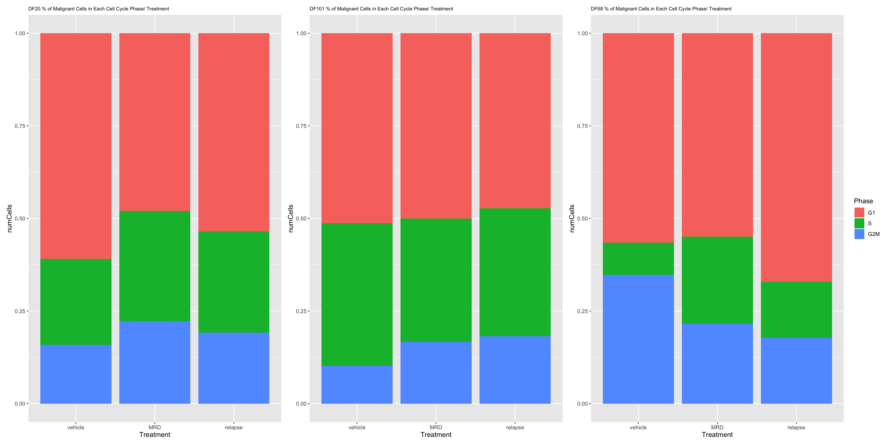
- OBSERVATIONS
- Different fractions of cells do seem to be in different cell cycle phases depending on the treatment condition. However, the trends we see do not necessary agree with our hypothesis that the MRD treatment condition will have the highest % of noncycling cells:
- DF20: % Noncycling - Vehicle > Relapse > MRD (does not support our hypothesis)
- DF101: % Noncycling - Vehicle > MRD > Relapse (does not support our hypothesis)
- DF68: % Noncycling - Relapse > Vehicle > MRD (does not support our hypothesis)
- In all cases, cells in MRD do not seem to have the highest fraction of noncycling G1 cells.
- Different fractions of cells do seem to be in different cell cycle phases depending on the treatment condition. However, the trends we see do not necessary agree with our hypothesis that the MRD treatment condition will have the highest % of noncycling cells:
To investigate this further, we compare UMAPs by treatment vs. UMAPs by cell cycle phase and scores
#UMAP -------------------------
ccUMAP.plots <- vector("list", length = 3)
names(ccUMAP.plots) <- c("DF20", "DF101", "DF68")
for(i in 1:length(PDXs)){
obj = PDXs[[i]]
name = PDX.names[[i]]
numCells = nrow(obj@meta.data)
obj$Phase <- factor(obj$Phase, levels = c("G1", "S", "G2M"))
byt <- UMAPPlot(obj, group.by = "treatment.status") +
labs(title = glue("{name} UMAP by treatment"), subtitle = glue("Number of cells in {name}: {numCells}")) +
theme(plot.title = element_text(hjust = 0.5))
bycc <- UMAPPlot(obj, group.by = "Phase") +
labs(title = glue("{name} UMAP by CellCycle Phase")) +
theme(plot.title = element_text(hjust = 0.5))
byscore <- FeaturePlot(obj, features = c("S.Score.centered", "G2M.Score.centered"), combine = FALSE)
byscore[[1]] <- byscore[[1]] + labs(title = glue("{name} UMAP by S Score"))
byscore[[2]] <- byscore[[2]] + labs(title = glue("{name} UMAP by G2M Score"))
ccUMAP.plots[[i]] <- byt + bycc + byscore[[1]] + byscore[[2]]
}
ccUMAP.plots[["DF20"]]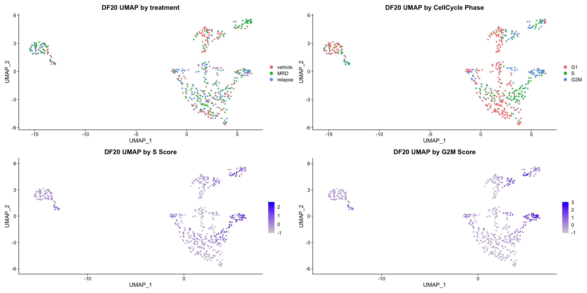
ccUMAP.plots[["DF101"]]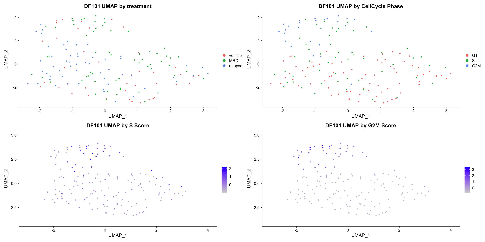
ccUMAP.plots[["DF68"]]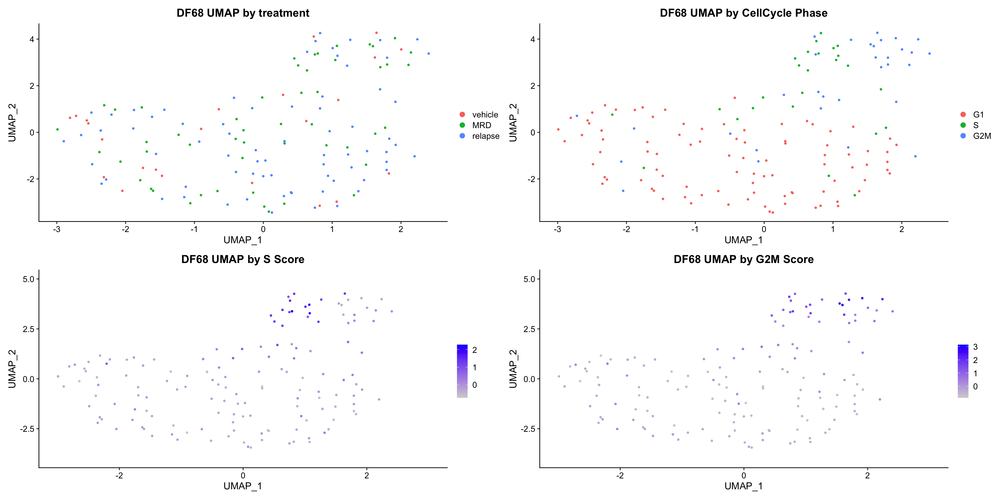
#PCA -------------------- (PCA separates cell by cell cycle really well)
ccPCA.plots <- vector("list", length = 3)
names(ccPCA.plots) <- c("DF20", "DF101", "DF68")
for(i in 1:length(PDXs)){
obj = PDXs[[i]]
name = PDX.names[[i]]
numCells = nrow(obj@meta.data)
obj$Phase <- factor(obj$Phase, levels = c("G1", "S", "G2M"))
byt <- PCAPlot(obj, group.by = "treatment.status") +
labs(title = glue("{name} PCA by treatment"), subtitle = glue("Number of cells in {name}: {numCells}")) +
theme(plot.title = element_text(hjust = 0.5))
bycc <- PCAPlot(obj, group.by = "Phase") +
labs(title = glue("{name} PCA by CellCycle Phase")) +
theme(plot.title = element_text(hjust = 0.5))
byscore <- FeaturePlot(obj, features = c("S.Score.centered", "G2M.Score.centered"), reduction = "pca",combine = FALSE)
byscore[[1]] <- byscore[[1]] + labs(title = glue("{name} PCA by centered S Score"))
byscore[[2]] <- byscore[[2]] + labs(title = glue("{name} PCA by centered G2M Score"))
ccPCA.plots[[i]] <- byt + bycc + byscore[[1]] + byscore[[2]]
}
ccPCA.plots[["DF20"]]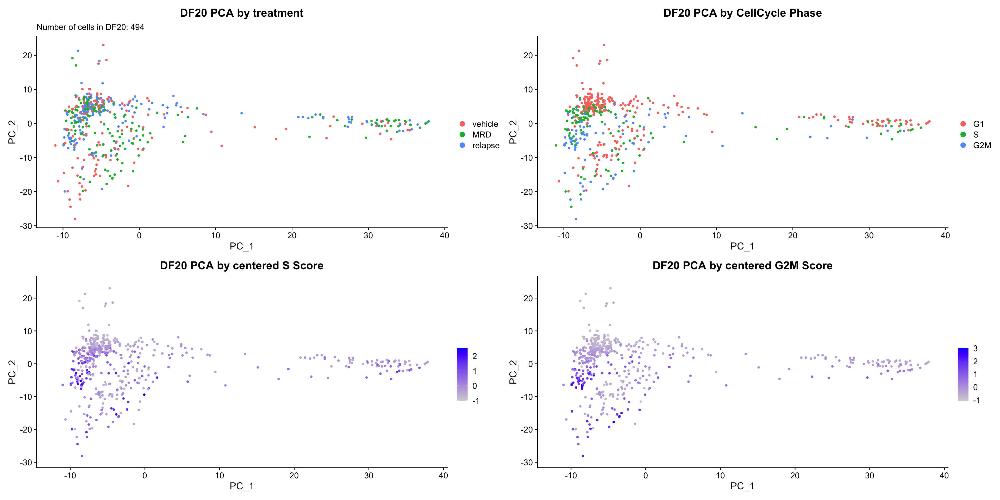
| Version | Author | Date |
|---|---|---|
| 8ca1e01 | jgoh2 | 2020-07-27 |
ccPCA.plots[["DF101"]]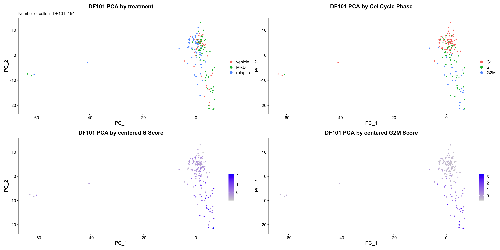
| Version | Author | Date |
|---|---|---|
| 8ca1e01 | jgoh2 | 2020-07-27 |
ccPCA.plots[["DF68"]]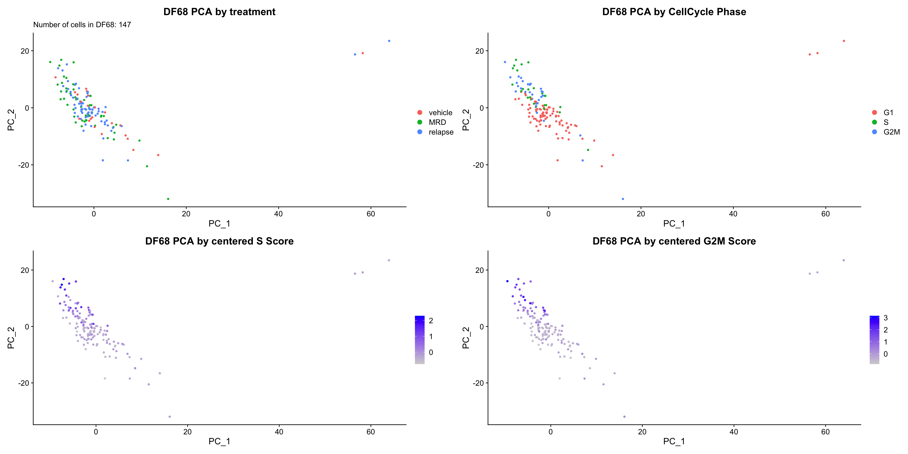
| Version | Author | Date |
|---|---|---|
| 8ca1e01 | jgoh2 | 2020-07-27 |
- OBSERVATIONS
- Although it doesn’t seem like the cells cluster by treatment condition within each model, it does seem like cells in the same cell cycle phase, especially those with higher S or G2M scores tend to be near each other on UMAP space. We visualized how cells cluster by cell cycle using both UMAP and PCA because PCA is known to cluster cells well by cell cycle.
- However, it is hard to tell whether there is a correlation between treatment condition and cell cycle phase / score based on these plots. We further investigate this by building violin plots of cell cycle scores separated by treatment status.
- Although it doesn’t seem like the cells cluster by treatment condition within each model, it does seem like cells in the same cell cycle phase, especially those with higher S or G2M scores tend to be near each other on UMAP space. We visualized how cells cluster by cell cycle using both UMAP and PCA because PCA is known to cluster cells well by cell cycle.
#VlnPlot -------------------------
cc.Vln.plots <- vector("list", length = 3)
names(Vln.plots) <- PDX.names
for (i in 1:length(PDXs)){
obj <- PDX.names[[i]]
numCells = nrow(PDXs[[i]]@meta.data)
p <- VlnPlot(PDXs[[i]], features = c("S.Score.centered", "G2M.Score.centered"), group.by = "treatment.status", pt.size = 0, combine = F)
p[[1]] <- p[[1]] + labs(title = glue("{obj} S.Score across treatment"), x = obj, subtitle = glue("Number of cells in {obj}: {numCells}")) +
geom_boxplot(width = 0.15, position = position_dodge(0.9), alpha = 0.3, show.legend = F) +
geom_text(label = paste(sum(PDXs[[i]]$treatment.status == "vehicle"), "cells"), x = "vehicle", y = min(PDXs[[i]]$S.Score.centered) -0.03) +
geom_text(label = paste(sum(PDXs[[i]]$treatment.status == "MRD"), "cells"), x = "MRD", y = min(PDXs[[i]]$S.Score.centered) - 0.03) +
geom_text(label = paste(sum(PDXs[[i]]$treatment.status == "relapse"), "cells"), x = "relapse", y = min(PDXs[[i]]$S.Score.centered) - 0.03)
p[[2]] <- p[[2]] + labs(title = glue("{obj} G2M.Score across treatment"), x = obj) +
geom_boxplot(width = 0.15, position = position_dodge(0.9), alpha = 0.3, show.legend = F)
cc.Vln.plots[[obj]] <- p[[1]] + p[[2]] + plot_layout(guides= 'collect')
}
cc.Vln.plots[["DF20"]]
cc.Vln.plots[["DF101"]]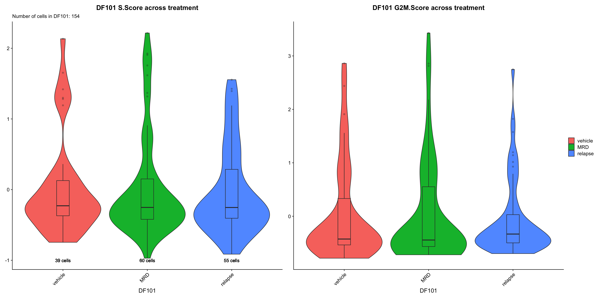
cc.Vln.plots[["DF68"]]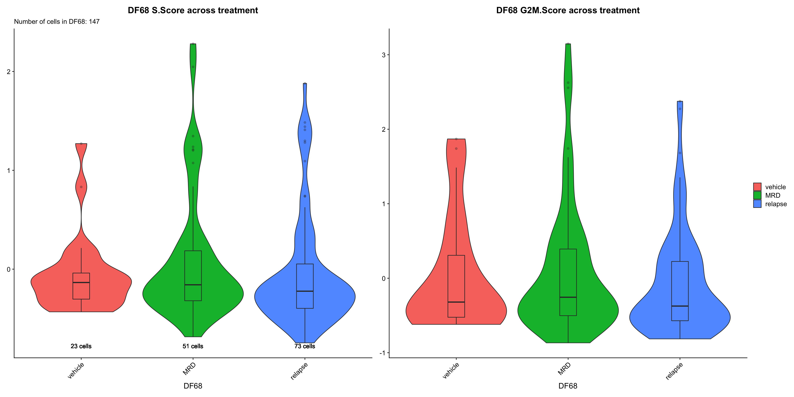
- OBSERVATIONS
- There does not seem to be any obvious trends in S or G2M scores across treatment conditions other than in DF20, which shows an increase in cycling cells in MRD and relapse relative to vehicle (which does not support our hypothesis).
- We evaluate the statistical significance of the difference between S and G2M scores across treatment conditions.
#DF20 ---------------------------------
DF20.sscore.df <- data.frame(
"MRDvsVehicle" = wilcox.test(DF20.MRD$S.Score.centered, DF20.vehicle$S.Score.centered)$p.value,
"MRDvsRelapse" = wilcox.test(DF20.MRD$S.Score.centered, DF20.relapse$S.Score.centered)$p.value,
"VehiclevsRelapse" = wilcox.test(DF20.vehicle$S.Score.centered, DF20.relapse$S.Score.centered)$p.value
)
DF20.g2m.df <-
data.frame(
"MRDvsVehicle" = wilcox.test(DF20.MRD$G2M.Score.centered, DF20.vehicle$G2M.Score.centered)$p.value,
"MRDvsRelapse" = wilcox.test(DF20.MRD$G2M.Score.centered, DF20.relapse$G2M.Score.centered)$p.value,
"VehiclevsRelapse" = wilcox.test(DF20.vehicle$G2M.Score.centered, DF20.relapse$G2M.Score.centered)$p.value
)
#DF101 ---------------------------------
DF101.sscore.df <- data.frame(
"MRDvsVehicle" = wilcox.test(DF101.MRD$S.Score.centered, DF101.vehicle$S.Score.centered)$p.value,
"MRDvsRelapse" = wilcox.test(DF101.MRD$S.Score.centered, DF101.relapse$S.Score.centered)$p.value,
"VehiclevsRelapse" = wilcox.test(DF101.vehicle$S.Score.centered, DF101.relapse$S.Score.centered)$p.value
)
DF101.g2m.df <-
data.frame(
"MRDvsVehicle" = wilcox.test(DF101.MRD$G2M.Score.centered, DF101.vehicle$G2M.Score.centered)$p.value,
"MRDvsRelapse" = wilcox.test(DF101.MRD$G2M.Score.centered, DF101.relapse$G2M.Score.centered)$p.value,
"VehiclevsRelapse" = wilcox.test(DF101.vehicle$G2M.Score.centered, DF101.relapse$G2M.Score.centered)$p.value
)
#DF68 ---------------------------------
DF68.sscore.df <- data.frame(
"MRDvsVehicle" = wilcox.test(DF68.MRD$S.Score.centered, DF68.vehicle$S.Score.centered)$p.value,
"MRDvsRelapse" = wilcox.test(DF68.MRD$S.Score.centered, DF68.relapse$S.Score.centered)$p.value,
"VehiclevsRelapse" = wilcox.test(DF68.vehicle$S.Score.centered, DF68.relapse$S.Score.centered)$p.value
)
DF68.g2m.df <-
data.frame(
"MRDvsVehicle" = wilcox.test(DF68.MRD$G2M.Score.centered, DF68.vehicle$G2M.Score.centered)$p.value,
"MRDvsRelapse" = wilcox.test(DF68.MRD$G2M.Score.centered, DF68.relapse$G2M.Score.centered)$p.value,
"VehiclevsRelapse" = wilcox.test(DF68.vehicle$G2M.Score.centered, DF68.relapse$G2M.Score.centered)$p.value
)
#combine ------------------------------
sscore.DF <- rbind(DF20.sscore.df, DF101.sscore.df, DF68.sscore.df)
rownames(sscore.DF) <- c("S.DF20", "S.DF101", "S.DF68")
g2m.DF <- rbind(DF20.g2m.df, DF101.g2m.df, DF68.g2m.df)
rownames(g2m.DF) <- c("g2m.DF20", "g2m.DF101", "g2m.DF68")
both.DF <- rbind(sscore.DF, g2m.DF)
DT::datatable(both.DF) %>%
DT::formatRound(names(both.DF), digits = 7) %>%
DT::formatStyle(names(both.DF), color = DT::styleInterval(0.05, c('red', 'black')))- CONCLUSIONS
- Only comparisons within model DF20 yielded statistically significant results (p < 0.05) for both S and G2M scores:
- DF20: For both S and G2M scores - MRD >> Vehicle; Relapse >> Vehicle
- These results do not support our hypothesis that there should be less cycling cells in the MRD treatment condition than the other two treatment conditions.
- Only comparisons within model DF20 yielded statistically significant results (p < 0.05) for both S and G2M scores:
Our results from above collectively suggest that OXPHOS and UPR expression, and cell cycle phase, do not significantly correlate with the treatment condition a cell is in. However, considering the idea that cell cycle might influence the expression of signatures, we are now interested in examining whether there is a correlation between the expression of OXPHOS and UPR and cell cycle phase.
- QUESTION #2 Is there a correlation between cell cycle phase and the expression of signatures?
- HYPOTHESIS We hypothesize that low cycling cells (G1) should express higher levels of OXPHOS and UPR genes.
- APPROACH Violin Plots
- Create Violin Plots for each hallmark of interest like **DE Analysis #1/APPROACH #1.
- Stratify the Violin Plots by cell cycle phase
- APPROACH Violin Plots
cc.exp.plot <- vector("list", length = 3)
names(cc.exp.plot) <- PDX.names
for(i in 1:length(PDXs)){
obj = PDXs[[i]]
name = PDX.names[[i]]
numCells = nrow(obj@meta.data)
obj$Phase <- factor(obj$Phase, levels = c("G1", "S", "G2M"))
p1 <- VlnPlot(obj, features = hms.centered, group.by = "Phase", pt.size = 0, combine = FALSE)
p1[[1]] <- p1[[1]] + labs(title = glue("{name} OXPHOS score by Cell Cycle Phase"), subtitle = glue("Number of cells in {name}: {numCells}")) +
geom_boxplot(width = 0.15, position = position_dodge(0.9), alpha = 0.3, show.legend = F)+
geom_text(label = paste(sum(obj$Phase == "G1"), "cells"), x = "G1", y = min(obj$HALLMARK_OXIDATIVE_PHOSPHORYLATION25.centered) -0.03) +
geom_text(label = paste(sum(obj$Phase == "G2M"), "cells"), x = "G2M", y = min(obj$HALLMARK_OXIDATIVE_PHOSPHORYLATION25.centered) - 0.03) +
geom_text(label = paste(sum(obj$Phase == "S"), "cells"), x = "S", y = min(obj$HALLMARK_OXIDATIVE_PHOSPHORYLATION25.centered) - 0.03)
p1[[2]] <- p1[[2]] + labs(title = glue("{name} UPR score by Cell Cycle Phase")) +
geom_boxplot(width = 0.15, position = position_dodge(0.9), alpha = 0.3, show.legend = F)
p2 <- VlnPlot(obj, features = hms.centered, group.by = "treatment.status", split.by = "Phase", pt.size = 0, combine = FALSE)
p2[[1]] <- p2[[1]] + labs(title = glue("{name} OXPHOS score by Cell Cycle Phase / Treatment")) +
geom_boxplot(width = 0.15, position = position_dodge(0.9), alpha = 0.3, show.legend = F)
p2[[2]] <- p2[[2]] + labs(title = glue("{name} UPR score by Cell Cycle Phase / Treatment")) +
geom_boxplot(width = 0.15, position = position_dodge(0.9), alpha = 0.3, show.legend = F)
cc.exp.plot[[i]] <- p1[[1]] + p1[[2]] + p2[[1]]+ p2[[2]] + plot_layout(guides= 'collect')
}
cc.exp.plot[["DF20"]]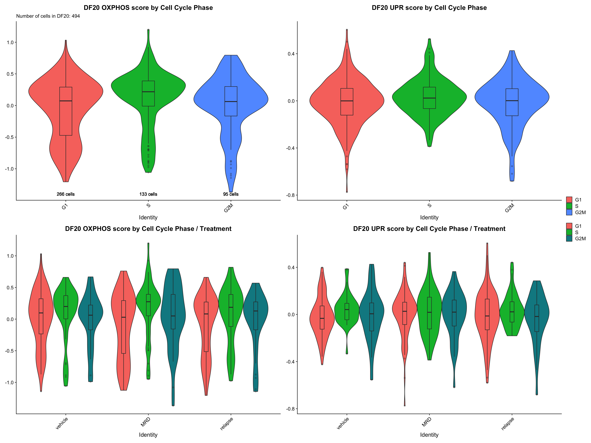
cc.exp.plot[["DF101"]]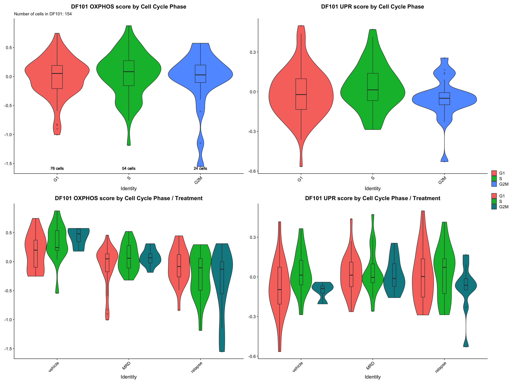
cc.exp.plot[["DF68"]]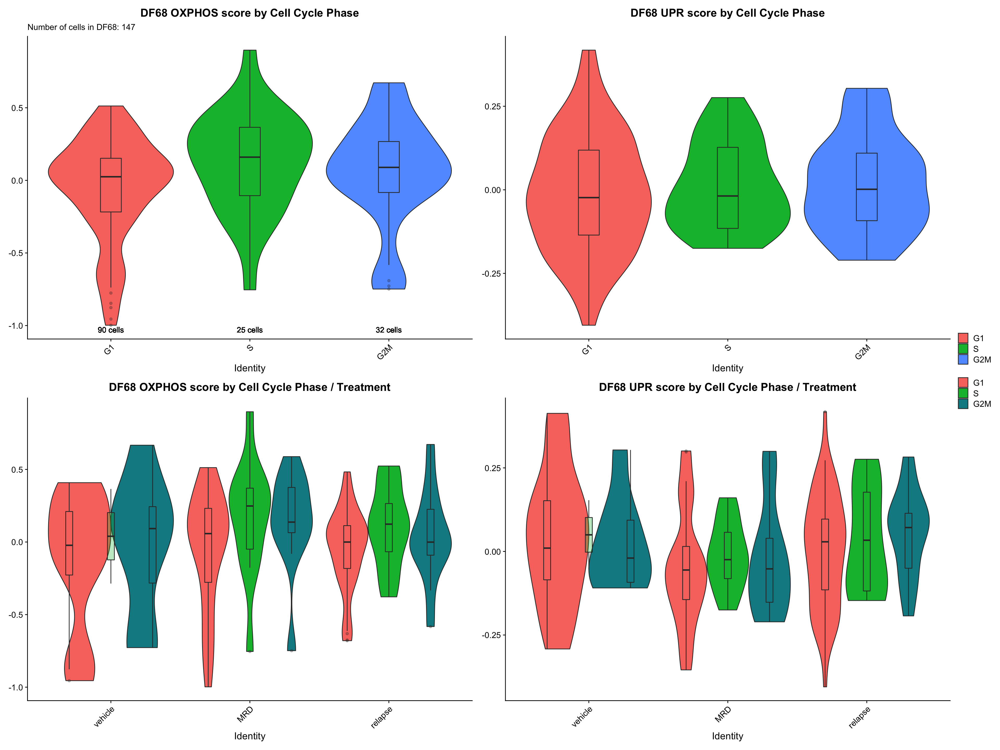
- OBSERVATIONS
- OXPHOS and UPR scores comparison across cell cycle phase within each model: S > G1 and G2M (in general) especially true within DF20
- OXPHOS and UPR scores comparison across cell cycle phase within each treatment condition per model: S > G1 and G2M especially withtin MRD treatment condition for OXPHOS
- We hypothesized that low / cycling cells (G1) should express higher levels of OXPHOS and/or UPR genes based on findings from previous studies that low cycling cells seem to survive cancer treatment. We try to rationalize our findings that cells in S phase actually express higher levels of our hallmarks:
- It makes sense that cells in S phase express higher levels of OXPHOS genes because DNA is being replicated in S phase, which requires a lot of energy.
- Even if a cell is found to be in the S phase, it might not mean that it is cycling. It is possible that the cell entered the S phase but does not continue through the cell cycle upon treatment. Furthermore, since DNA is being replicated during S phase and mistakes are most commonly made during DNA replication, it is possible that DNA damage repair programs are also most active during this phase, and may subsequently promote survival upon cancer treatment.
- This rationale would also agree with our results from comparing S and G2M scores across treatment conditions, where we found that cells in MRD and Relapse have statistically significantly higher S and G2M scores than cells in Vehicle.
- However, this rationale does not explain why we do not see enriched expression of OXPHOS and UPR genes in the MRD treatment condition.
note: our sample size is extremely small for each condition, which may mean that we have really low power
sessionInfo()R version 4.0.2 (2020-06-22)
Platform: x86_64-apple-darwin17.0 (64-bit)
Running under: macOS Mojave 10.14.6
Matrix products: default
BLAS: /Library/Frameworks/R.framework/Versions/4.0/Resources/lib/libRblas.dylib
LAPACK: /Library/Frameworks/R.framework/Versions/4.0/Resources/lib/libRlapack.dylib
locale:
[1] en_US.UTF-8/en_US.UTF-8/en_US.UTF-8/C/en_US.UTF-8/en_US.UTF-8
attached base packages:
[1] stats graphics grDevices datasets utils methods base
other attached packages:
[1] ggpubr_0.4.0 GGally_2.0.0 gt_0.2.1 reshape2_1.4.4 tidyselect_1.1.0
[6] presto_1.0.0 data.table_1.12.8 Rcpp_1.0.5 glue_1.4.1 patchwork_1.0.1
[11] EnhancedVolcano_1.6.0 ggrepel_0.8.2 here_0.1 readxl_1.3.1 forcats_0.5.0
[16] stringr_1.4.0 dplyr_1.0.0 purrr_0.3.4 readr_1.3.1 tidyr_1.1.0
[21] tibble_3.0.3 ggplot2_3.3.2 tidyverse_1.3.0 cowplot_1.0.0 Seurat_3.1.5
[26] BiocManager_1.30.10 renv_0.11.0-4
loaded via a namespace (and not attached):
[1] Rtsne_0.15 colorspace_1.4-1 ggsignif_0.6.0 rio_0.5.16 ellipsis_0.3.1 ggridges_0.5.2
[7] rprojroot_1.3-2 fs_1.4.2 rstudioapi_0.11 farver_2.0.3 leiden_0.3.3 listenv_0.8.0
[13] DT_0.14 fansi_0.4.1 lubridate_1.7.9 xml2_1.3.2 codetools_0.2-16 splines_4.0.2
[19] knitr_1.29 jsonlite_1.7.0 workflowr_1.6.2 broom_0.7.0 ica_1.0-2 cluster_2.1.0
[25] dbplyr_1.4.4 png_0.1-7 uwot_0.1.8 sctransform_0.2.1 compiler_4.0.2 httr_1.4.1
[31] backports_1.1.8 assertthat_0.2.1 Matrix_1.2-18 lazyeval_0.2.2 cli_2.0.2 later_1.1.0.1
[37] htmltools_0.5.0 tools_4.0.2 rsvd_1.0.3 igraph_1.2.5 gtable_0.3.0 RANN_2.6.1
[43] carData_3.0-4 cellranger_1.1.0 vctrs_0.3.2 ape_5.4 nlme_3.1-148 crosstalk_1.1.0.1
[49] lmtest_0.9-37 xfun_0.15 globals_0.12.5 openxlsx_4.1.5 rvest_0.3.5 lifecycle_0.2.0
[55] irlba_2.3.3 rstatix_0.6.0 future_1.18.0 MASS_7.3-51.6 zoo_1.8-8 scales_1.1.1
[61] hms_0.5.3 promises_1.1.1 parallel_4.0.2 RColorBrewer_1.1-2 curl_4.3 yaml_2.2.1
[67] reticulate_1.16 pbapply_1.4-2 gridExtra_2.3 reshape_0.8.8 stringi_1.4.6 zip_2.0.4
[73] rlang_0.4.7 pkgconfig_2.0.3 evaluate_0.14 lattice_0.20-41 ROCR_1.0-11 labeling_0.3
[79] htmlwidgets_1.5.1 RcppAnnoy_0.0.16 plyr_1.8.6 magrittr_1.5 R6_2.4.1 generics_0.0.2
[85] DBI_1.1.0 foreign_0.8-80 pillar_1.4.6 haven_2.3.1 whisker_0.4 withr_2.2.0
[91] fitdistrplus_1.1-1 abind_1.4-5 survival_3.2-3 future.apply_1.6.0 tsne_0.1-3 car_3.0-8
[97] modelr_0.1.8 crayon_1.3.4 KernSmooth_2.23-17 plotly_4.9.2.1 rmarkdown_2.3 grid_4.0.2
[103] blob_1.2.1 git2r_0.27.1 reprex_0.3.0 digest_0.6.25 httpuv_1.5.4 munsell_0.5.0
[109] viridisLite_0.3.0